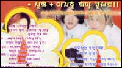

신화와 이지훈이 만났다!

신화와 이지훈이 합동 콘서트를 개최한다. 신화와 이지훈은 [KBS 2TV 자유선언 오늘은 토요일]이 최근 펼치고 있는 '희망의 집짓기'의 릴레이 콘서트 2번째 주자로 나서는 것.주영훈과 이현우가 진행하는 이번 콘서트는 1월 28일 일요일 늦은 4시 세종대 대양홀에서 개최되며, 전액 희망의 집짓기에 사용되는 입장료는 10,000원이다. 공연 한시간 전 선착순 입장이라니까 신화와 이지훈이 보고 싶으신 분들, 빨리 준비하시고, 뛰세요!!